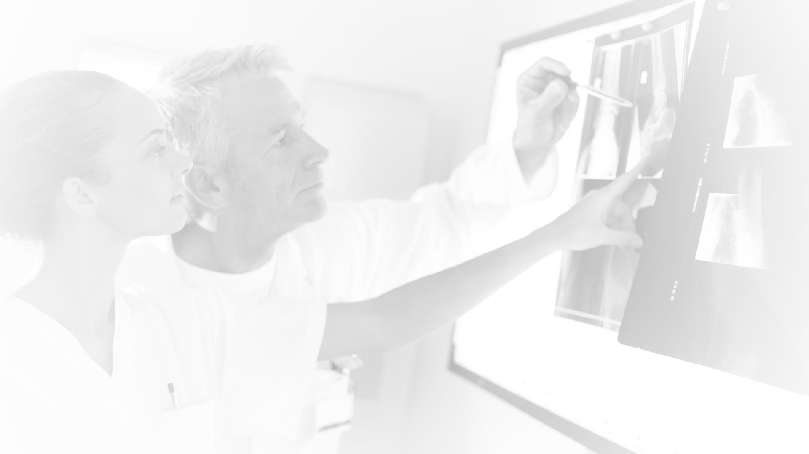
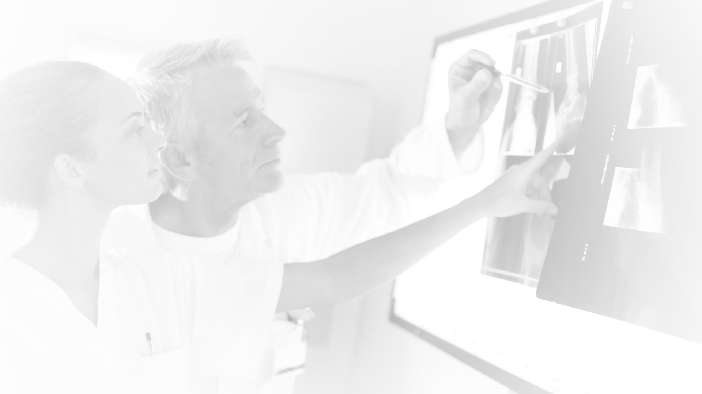

Drug Discovery & Development
Drug Discovery & Development is the process followed to get a clinical drug - for use in humans - from the laboratory to the marketplace, thus making the treatment available to individuals.
The entire process can take 12 years on average and can cost 2 billion Euros, consisting of costs both directly and indirectly accountable to the drug development project.
The steps of the Drug Discovery & Development process are very strictly governed and regulated in order to ensure that only products which are both safe and effective are brought to market.
Use the next button or the slider below to navigate through the different stages of Drug Discovery & Development.
Research
Research can be divided into three main phases:
- Target Discovery
- Lead Generation
- Lead Optimization
They are mainly driven by chemical and pharmaceutical activities and build the basis of the beginning for a drug discovery project.
Research for one specific therapeutic drug may start with up to 10,000 substances.
The discovery to find a potential clinical drug begins in the laboratory.
The first step of any drug discovery activity is 'target' identification and validation. This is the step where cellular or genetic factors that play a key role in a specific disease are identified.
Chemists now become involved in analyzing and adapting the molecular structure of potential candidates in order to maximize the opportunities for maximum beneficial effect on the target.
Pre-Clinical
Pre-Clinical Development involving up to 250 of the original 10,000 substances.
Pre-Clinical Development involves an extensive and lengthy series of tests in animals and in vitro experiments performed in the laboratory, prior to the candidate being tested in humans. Pre-Clinical Development involves an extensive and lengthy series of tests in animals and in vivo experiments performed in the laboratory, prior to the candidate being tested in humans.
This early research provides a first answer to the question concerning whether all potential drug candidates that are further developed are safe for humans. It provides vital information on what the body does to the drug in terms of absorption, distribution, metabolism and excretion of the drug and also how the drug will be formulated and manufactured.
Clinical
Clinical Studies
Once Pre-Clinical Development of a candidate has shown a strong profile for safety and efficacy, the next stage is to undertake a complex series of clinical studies in healthy volunteers and patients.
The aim of clinical studies is to determine whether a new drug is above all safe, and is effective in the treatment of the target disease.
Additionally, clinical studies can shed light on the economic, social and ethical implications of the medical technology and ensures that drug development decisions and market access strategies are based on a robust understanding of the Health Technology Assessment organizations and payer’s requirements.
Study of Human Pharmacology (Phase I)
Phase I is carried out with up to 5 of the original 10,000 substances. It has been shown that over 99% of the original substances are not suitable for further development.
Phase I clinical studies are the first step in testing a new clinical drug in humans. In these studies, researchers evaluate what dose of the drug is safe, how a new drug should be administered (e.g. orally or by injection) and how frequently (e.g. three times a day). The researchers watch very closely for any side-effects that the volunteer may experience.
For some target diseases, it is unethical to conduct Phase I studies in healthy volunteers, due to the toxic side-effects of the Candidate, such as clinical drugs developed to treat HIV and Cancer. Therefore, Phase I studies in these clinical drugs will be carried out in patients who have the target disease.
During a clinical study, blood samples, clinical drug excretion characteristics, together with positive and negative effects of the drug are all monitored. This information is used to establish how the clinical drug behaves in the human body. An early signal of the clinical drug activity in humans may be seen.
Clinical Studies - Exploring the Drug for the Target Disease (Phase II)
Phase II is carried out using 3 of the original 10,000 substances.
Phase II clinical studies assess the safety and efficacy of a clinical drug, and evaluate how it affects the human body. This usually focuses on a particular target disease (medical condition).
In phase II clinical studies, the drug is given to a small number of people with the target disease, so that the therapeutic efficacy of the drug can be observed. The data from these patient studies is compared to data from the Phase I clinical studies involving healthy participants, and any variations in behaviour of the clinical drug when the target disease is present, are noted.
The re-evaluation of the pharmacokinetic and excretion data will often result in an optimal dosage of the clinical drug being established.
There is also a so called 'Point of Transition' period. At the end of this period the uncertainties around the project have been sufficiently reduced by data from studies such as those conducted by Chemistry Manufacturing and Control, pre-clinical studies and clinical studies, and it is scientifically justified for the company to further invest in further Phase II if necessary and then Phase III studies in a larger population of patients.
Clinical Studies - Confirmation of Therapeutic Safety and Benefit (Phase III)
Thousands of patients across several countries are recruited for Phase III clinical studies which are carried out to establish the efficacy of the clinical drug in a larger patient population, and also to monitor any side-effects of the clinical drug compared to any established treatments.
As well as studying the safety and efficacy of the new clinical drug, comparisons are often also made with placebo and alternative treatments during Phase III clinical studies, in order to demonstrate an improved risk:benefit ratio.
In addition, Phase III clinical studies may also be carried out to assess the effects of the clinical drug on (for example) young and old patients, different stages of the target disease if relevant, or in combination with other drugs so that safe dosage levels can be established in these groups.
This is the busiest and most intensive phase of any clinical studies programme. The analysis of the data from the studies will form the decision point for an application for the Product License and Marketing Authorization.
Approval
APPROVAL - APPLICATION FOR PRODUCT LICENSE
Application for approval with one substance.
The data from the Phase I through to Phase III clinical studies are evaluated and reports are produced.
These reports, also including the data from the pre-clinical studies, are then submitted to the Regulatory Authorities for evaluation by a team of experts.
The data will need to be submitted to the Regulatory Authority in each country within which the Company wants to market the new clinical drug.
If a new clinical drug is considered to be effective and safe, a Product License will be granted to the Company to allow them to market the clinical drug.
POST-MARKETING - POST-MARKETING STUDIES (PHASE IV)
Once a Company has been granted a Product License, further research into the clinical drug is still required. Phase IV clinical studies are usually undertaken in close collaboration with the Company's marketing department. The aim is usually to evaluate further the safety and efficacy of the new drug in much larger numbers of people, and under "real life" conditions.
Another reason for performing further clinical studies is to explore and extend the range of target diseases for which the drug may be used. Also, further knowledge is gained about aspects of the drug such as epidemiological data, pharmaco-epidemiological information, and Health-Economics and outcomes data.
If any additional target diseases are identified for which the new clinical drug may be used to treat, appropriate clinical studies are required first, in order to update and obtain approval for the new Product License.
Summary
The following learning outcomes should have been covered as part of this module. You should now:
- Be aware of the generic chronological steps in the Drug Discovery & Development process and the key activities involved at each stage
- Be aware of the process of getting a clinical drug from the laboratory to the market
- Be aware of the time and costs involved in the process